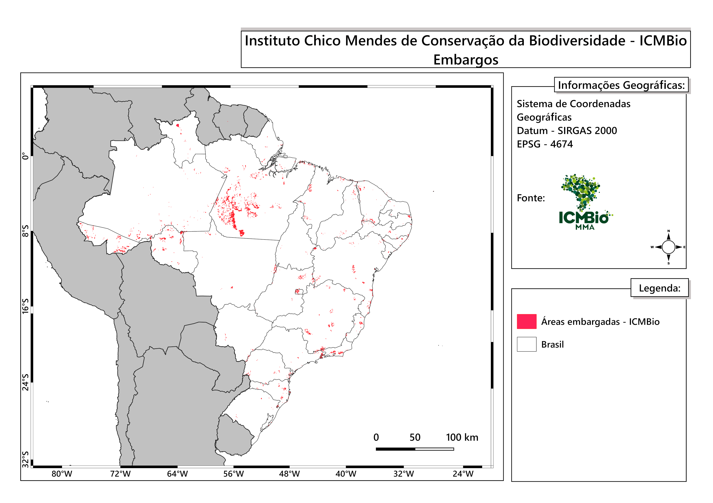

4.4. Embargos
O embargo é uma medida administrativa que tem por objetivo impedir a continuidade do dano ambiental, propiciar a regeneração do meio ambiente e dar viabilidade à recuperação da área degradada, devendo restringir-se exclusivamente ao local onde efetivamente caracterizou-se a infração ambiental, não alcançando as demais atividades realizadas em áreas não embargadas da propriedade ou posse, ou não correlacionadas com a infração. Desta maneira, impedindo a continuidade do dano, o embargo visa promover a recomposição ambiental da área em que ocorreu o dano ambiental [35]. Se o embargo for desrespeitado, o infrator pode ser multado e além disso quem comprar, tiver posse, transportar ou comercializar os bens produzidos na área embargada pode ser multado e ter os bens confiscados [36]. A cessação das penalidades de suspensão e embargo dependerá de decisão da autoridade ambiental após a apresentação, por parte do autuado, de documentação que regularize a obra ou atividade [35].
As agências ambientais municipais, estaduais e federal podem embargar uma área, quando observado o dano ambiental. Entretanto, devido à dificuldade de conseguir os dados de áreas embargadas nas agências municipais e estaduais, para este trabalho serão utilizadas apenas as áreas embargadas pelo Instituto Brasileiro do Meio Ambiente e dos Recursos Naturais Renováveis (IBAMA) e Instituto Chico Mendes de Conservação da Biodiversidade (ICMBIO). Os embargos realizados pelo IBAMA estão disponibilizadas no seguinte endereço e os embargos efetuados pelo ICMBIO estão no seguinte endereço. A dispersão espacial dos embargos efetuados pelo IBAMA e pelo ICMBIO no território brasileiro pode ser observada nas figuras da Tabela 4.5.
|
 |

A Tabela 4.6 apresenta a estrutura desse conjunto de dados. As colunas alfanuméricas encontram-se codificadas em UTF-8. O sistema de referência espacial utilizado é baseado em coordenadas geográficas (LAT/LONG) no sistema geodésico de referência SIRGAS 2000 (EPSG:4674).
nome |
tipo |
descrição |
|
|---|---|---|---|
PK |
id |
integer |
Identificador do embargo |
geom |
geometry(MultiPolygon,4674) |
Geometria da área embargada |
|
objectid |
bigint |
Identificador do embargo |
|
nom_pessoa |
varchar(120) |
Pessoa identificada como responsável pelo local ou área embargada |
|
cpf_cnpj_i |
varchar(25) |
Número de Cadastro Nacional de Pessoa Jurídica (CNPJ) ou Cadastro de Pessoa Física (CPF) da pessoa embargada com delimitadores |
|
cpf_cnpj_s |
varchar(25) |
Número de Cadastro Nacional de Pessoa Jurídica (CNPJ) ou Cadastro de Pessoa Física (CPF) da pessoa embargada (somente os números) |
|
nom_mun_uf |
varchar(120) |
Município e Unidade da federação |
|
end_pessoa |
varchar(180) |
Endereço do resposável |
|
des_bairro |
varchar(120) |
Bairro do responsável |
|
num_cep |
varchar(25) |
Código de endereçamento postal do endereço |
|
num_fone |
varchar(80) |
Telefone da pessoa identificada como responsável |
|
seq_tad |
bigint |
Telefone da pessoa identificada como responsável |
A Tabela 4.7 apresenta a estrutura do conjunto de dados relacionados com os embargos efetuados pelo ICMBIO. As colunas alfanuméricas encontram-se codificadas em UTF-8. O sistema de referência espacial utilizado é baseado em coordenadas geográficas (LAT/LONG) no sistema geodésico de referência SIRGAS 2000 (EPSG:4674).
nome |
tipo |
descrição |
|
|---|---|---|---|
PK |
id |
integer |
Identificador do embargo |
geom |
geometry(MultiPolygon,4674) |
Geometria da área embargada |
|
vw_num_emb |
double precision |
Identificador do embargo |
|
serie |
varchar(254) |
Série do embargo (A, B, [] ) |
|
origem |
varchar(254) |
Informa a mídia de origem |
|
numero_ai |
varchar(254) |
Informa o identificador do auto de infração |
|
cpf_cnpj |
varchar(254) |
Número de Cadastro Nacional de Pessoa Jurídica (CNPJ) ou Cadastro de Pessoa Física (CPF) da pessoa embargada (somente os números) |
|
autuado |
varchar(254) |
Informa o nome ou a razão do autuado |
|
desc_infra |
varchar(254) |
Descrição do auto de infração |
|
desc_sanc |
varchar(254) |
Descrição da sanção |
|
artigo_1 |
varchar(254) |
Artigo que dá base para o auto de infração |
|
artigo_2 |
varchar(254) |
Artigo que dá base para o auto de infração |
|
tipo_infra |
varchar(254) |
Tipo da infração |
|
nome_uc |
varchar(254) |
Nome da UC em que ocorreu a infração |
|
cnuc |
varchar(254) |
Codigo CNUC |
|
municipio |
varchar(254) |
Nome do município |
|
uf |
varchar(254) |
Sigla do estado |
|
data |
date |
Data do embargo |
|
ano |
varchar(254) |
Ano do embargo |
|
julgamento |
varchar(254) |
Informações sobre andamento do processo |
|
area |
varchar(254) |
Área do embargo com unidade |
|
processo |
varchar(254) |
Número do processo |
4.4.1. Consultas
Consulta 1. Recuperar o número de áreas embargadas pelo IBAMA.
Solução:
SELECT COUNT(*)
FROM embargo_ibama_20240508;
Consulta 2. Recuperar as áreas embargadas pelo IBAMA após 2020 com todos os campos que possuam geometrias válidas.
Solução:
SELECT *
FROM embargo_ibama_20240508
WHERE extract(YEAR from dat_embarg) >=2020
AND ST_IsValid(geom);
Consulta 3. Recuperar os identificadores (ref_bacen, nu_ordem) e as geometrias das glebas e os identificadores dos embargos com as seguintes restrições: i) glebas a partir de 2020; ii) intersectam os embargos efetuados pelo IBAMA em 2020, exclusivamente; iii) possuam geometrias válidas.
Solução:
SELECT gle.ref_bacen as ref_bacen, gle.nu_ordem as nu_ordem,
emb.numero_tad as numero_tad, emb.num_auto_i as num_auto, gle.geom as geom
FROM embargo_ibama_20240508 as emb, sicor_glebas as gle
WHERE ST_INTERSECTS(
ST_Transform(emb.geom, 4674), gle.geom)
AND extract(YEAR from emb.dat_embarg) = 2020
AND extract(YEAR from gle.data_emissao_contrato) >= 2020
AND ST_IsValid(gle.geom)
AND ST_IsValid(emb.geom);